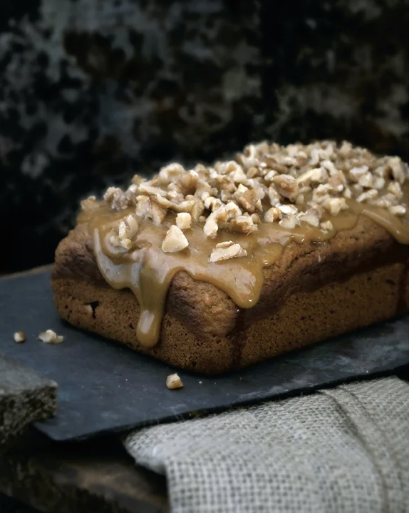

SWEET POTATO BREAD

Moist, dense, and richly flavored with an array of spices, this popular Northrend bread would be tasty on its own. But topped with caramel and crunchy nuts, it's absolutely decadent.
INGREDIENTS
- 1 pound sweet potatoes
- 1/4 cup whole milk
- 1 cup dark brown sugar
- 2 large eggs
- 1/2 cup canola oil
- 1 teaspoon vanilla
- 1 teaspoon Holiday Spices
- 1/2 teaspoon salt
- 1 teaspoon baking powder
- 1/2 teaspoon baking soda
- 1 1/2 cups flour
- butter, for greasing pan
TOPPING
- 2 tablespoons salted butter
- 1/2 cup light brown sugar
- 1/4 cup heavy cream
- 1/4 teaspoon salt
- dash of vanilla
- dash of bourbon
- 1/4 cup pecans, roughly chopped
STEPS
- Preheat the oven to 400F. Using a sharp knife, pierce the sweet potatoes several times, then place in the over directly on the rack. Bake for about an hour, until they are cooked through. Remove and allow to sit until they are cool enough to handle.
- Turn down the over to 325F and lightly butter a 9 x 5 inch loaf pan. Scoop the sweet potatoes out of the skins and into a medium bowl. Add the milk and roughly mash the potatoes until there are no large pieces left. Add the sugar, eggs, oil, vanilla, and spices, beating to combine. Add the dry ingredients, scraping the sides of the bowl to make sure everything is incorporated.
- Pour the batter into the loaf pan, and bake for about an hour, or until a toothpick poked in the middle comes out clean. Allow to cool for at least an hour, then run a butter knife along the sides of the pan and gently tip the bread out. Once completely cool, add topping.
TOPPING:
In a small saucepan over medium-high heat, whisk together butter, brown sugar, heavy cream, and salt. Bring to a boil, then reduce to s simmer for 5 minutes, whisking frequently. Whisk in the bourbon then remove from heat. Allow to cool for several minutes before spreading on the bread. Sprinkle the chopped nuts and enjoy!